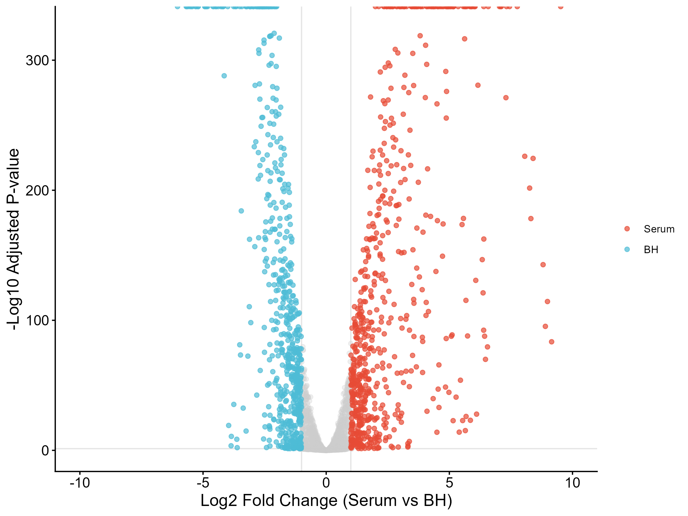
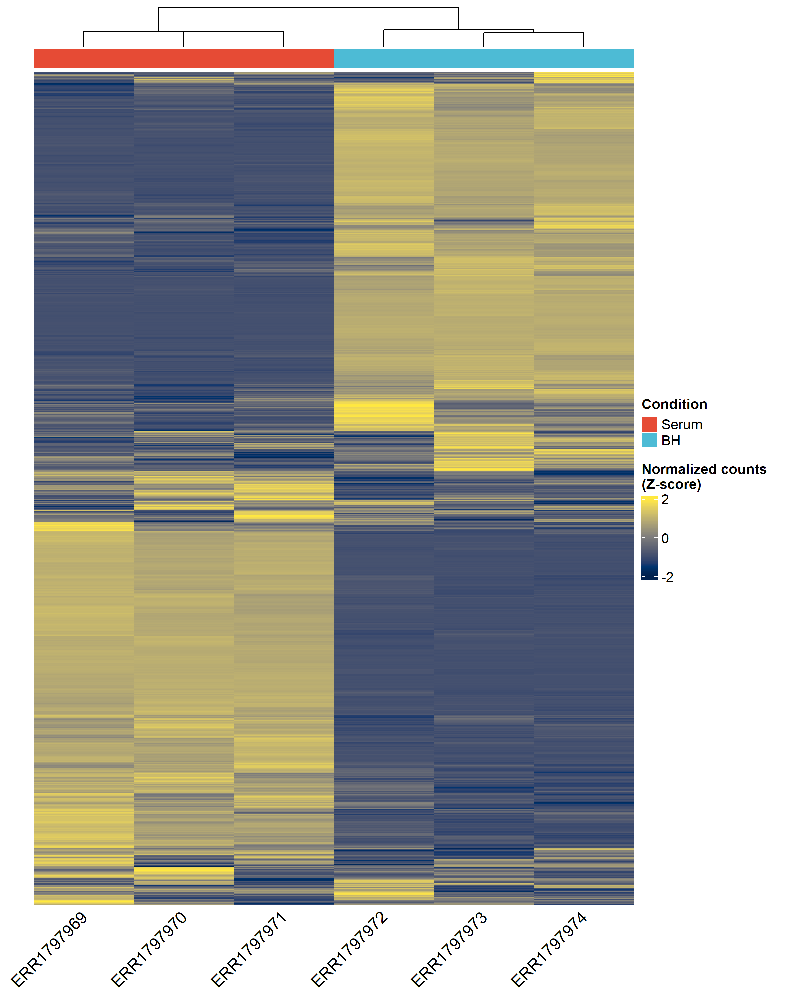
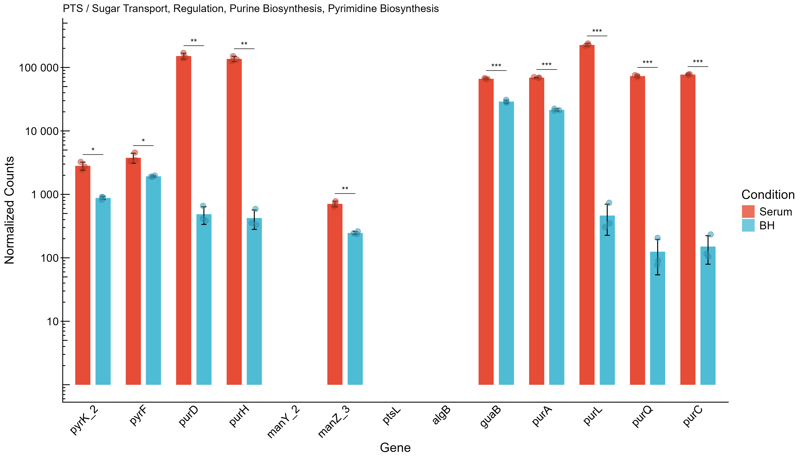
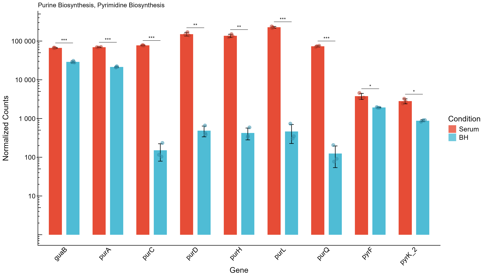
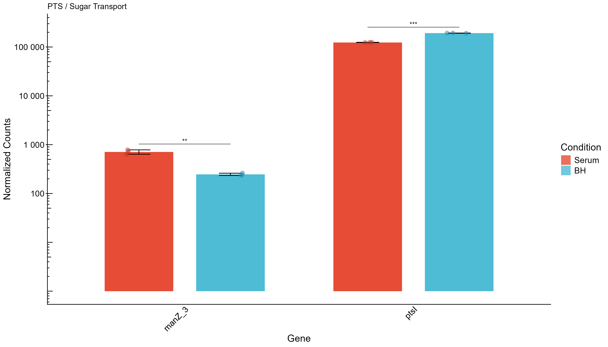
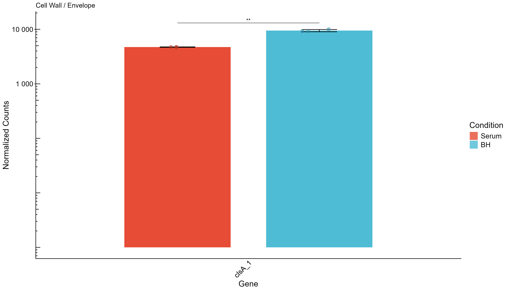

| Planned_item | Status | Evidence |
|---|---|---|
| PacBio assembly | Completed | Canu outputs and QUAST/BUSCO summaries present |
| Illumina + Nanopore assembly | Completed | SPAdes outputs and summaries present |
| Assembly evaluation | Completed | QUAST and BUSCO reports for both branches |
| Structural / functional annotation | Completed | Prokka outputs and GFF files present |
| Synteny comparison | Completed | MUMmerplot summaries for both branches |
| Read preprocessing | Completed | FastQC and trimming outputs in result/RNA_trim |
| RNA alignment to assemblies | Completed | BWA + SAMtools alignment logs for Canu and SPAdes |
| Differential expression | Completed | DESeq2 script and plots present |
| Annotation refinement | Not found | No dedicated refinement step identified |
| Plasmid identification | Not found | No plasmid analysis outputs identified |
| SNP calling | Not found | No SNP calling outputs identified |
| Antibiotic resistance evaluation | Not found | No dedicated resistance analysis outputs identified |
| Tn-seq / essential-gene analysis | Not found | No Tn-seq analysis outputs identified |
Genome Analysis Project Report
E. faecium adaptation to human serum
Overview
This report documents the genome analysis project for Enterococcus faecium. The biological motivation is the study behind DOI 10.1186/s12864-017-4299-9, which investigates fitness determinants during growth in human serum. The project goal in the wiki is to identify genes in E. faecium that are relevant for adaptation to human serum.
The current workspace contains a dual-assembly workflow, downstream evaluation, annotation, synteny analysis, RNA-seq preprocessing/alignment, read counting, and differential expression analysis.
Paper and project focus
- Paper: RNA-seq and Tn-seq reveal fitness determinants of vancomycin-resistant Enterococcus faecium during growth in human serum
- DOI: 10.1186/s12864-017-4299-9
- Organism: vancomycin-resistant E. faecium
- Conditions: human serum versus rich medium (BHI/BH)
Genes of interest from the paper
The report currently focuses on the genes of interest already used in the RNA analysis:
manZ_3,manY_2,ptsL,algBguaB,purA,pyrF,pyrK_2purD,purH,purL,purQ,purCclsA_1,ddcP,ldt_fmp,mgs,lytA_2
Project plan versus completed work
The core analyses in the wiki plan are implemented. The extra analyses listed in the course brief are not currently present in the workspace as dedicated output or analysis scripts.
Methods summary
The workflow is implemented as SLURM batch jobs with two assembly branches:
- Canu long-read assembly from PacBio data.
- SPAdes hybrid assembly from Illumina and Nanopore data.
Downstream analyses are run separately for each branch:
- QUAST and BUSCO evaluation
- Prokka annotation
- BLAST-based related species identification
- MUMmerplot synteny visualization
- RNA-seq trimming and QC
- RNA alignment with BWA and SAMtools
- HTSeq read counting
- DESeq2 differential expression analysis
Current implementation status
- Workflow description and job structure are documented in the repository.
- Assembly and evaluation logs are present for both branches.
- RNA-seq preprocessing and alignment logs are present.
- A Canu-based differential-expression script produces the current figures.
Results
Assembly evaluation
| Branch | Assembly | Complete_buscos | Single_copy | Duplicated | Fragmented | Missing | Total_length_bp.x | N50 | N50_bp | L50 | auN | Total_length_bp.y | GC_percent | Ns_per_100kbp |
|---|
The Canu assembly is much more contiguous than the SPAdes assembly. BUSCO is slightly better for SPAdes in completeness, but QUAST shows a large gap in contiguity and many more ambiguous bases in the hybrid assembly.
Synteny and closest species
| Branch | run_prefix | assembly_fasta | closest_accession | closest_species | reference_fasta | filtered_delta | plot_png |
|---|---|---|---|---|---|---|---|
| Canu | E_faecium_PacBio_20260415_114224 | /home/raha1670/genome_analysis/analysis/01_genomeAssembly/E_faecium_PacBio_20260415_114224/E_faecium_PacBio_20260415_114224.contigs.fasta | gi|1250053801|gb|CP018129.1| | Enterococcus faecium | /home/raha1670/genome_analysis/analysis/04_genomeSynteny/mummerplot_canu/E_faecium_PacBio_20260415_114224/E_faecium_PacBio_20260415_114224_closest_reference.fasta | /home/raha1670/genome_analysis/analysis/04_genomeSynteny/mummerplot_canu/E_faecium_PacBio_20260415_114224/E_faecium_PacBio_20260415_114224_vs_closest.1delta | /home/raha1670/genome_analysis/analysis/04_genomeSynteny/mummerplot_canu/E_faecium_PacBio_20260415_114224/E_faecium_PacBio_20260415_114224_mummerplot.png |
| SPAdes | E_faecium_SPAdes_20260415_121016 | /home/raha1670/genome_analysis/analysis/01_genomeAssembly/E_faecium_SPAdes_20260415_121016/scaffolds.fasta | gi|1072833967|gb|CP014529.1| | Enterococcus faecium | /home/raha1670/genome_analysis/analysis/04_genomeSynteny/mummerplot_spades/E_faecium_SPAdes_20260415_121016/E_faecium_SPAdes_20260415_121016_closest_reference.fasta | /home/raha1670/genome_analysis/analysis/04_genomeSynteny/mummerplot_spades/E_faecium_SPAdes_20260415_121016/E_faecium_SPAdes_20260415_121016_vs_closest.1delta | /home/raha1670/genome_analysis/analysis/04_genomeSynteny/mummerplot_spades/E_faecium_SPAdes_20260415_121016/E_faecium_SPAdes_20260415_121016_mummerplot.png |
Both assemblies identify Enterococcus faecium as the closest species.
RNA-seq preprocessing and alignment
The repository contains FastQC reports for pre- and post-trim RNA reads in result/RNA_trim. Alignment logs show BWA mapping against both assembly branches using the trimmed Serum and BH paired reads.
One preprocessing log reports missing paired FASTQ files in a specific run directory, so the RNA workflow should be reviewed for path consistency before final submission.
Differential expression analysis
The current differential-expression script uses DESeq2 and produces:
- a volcano plot
- a heatmap of normalized counts
- barplots for genes of interest with significance markers






The script currently operates on the Canu-derived read counts and focuses on the gene set defined from the paper.
Documentation and evaluation
The student manual requires the GitHub repository and wiki to function as a clear, organized, reproducible project record. The required content includes:
- the paper being worked on
- the project plan
- goals and hypotheses
- one section per analysis step
- methods, results, and short discussion for each analysis
- general thoughts and interpretation
- preferably a daily log
Current repository status
- Code and workflow scripts are saved in the repository.
- The wiki already contains the project overview and plan.
- Analysis outputs are saved under
result/. - A Quarto report draft now exists as the main written summary.
Remaining gaps
- Expand the wiki into per-analysis pages if that is not already done.
- Add a daily log if the course expects one explicitly.
- Integrate the student-manual GitHub and evaluation guidance more directly once the page excerpts are added.
References
- Zhang et al. 2017. RNA-seq and Tn-seq reveal fitness determinants of vancomycin-resistant Enterococcus faecium during growth in human serum. DOI: 10.1186/s12864-017-4299-9.